Переведите с чиновничьего на мемный: «Техническая возможность имеется. Целесообразность мероприятия вызывает вопросы».
Ответ и раскрытие
Можно. А зачем?
Фраза из интервью представителя АвтоВАЗа стала мемом.
Зачёт: Можно, а зачем?; Можно. А зачем?
20 категорий · 100 вопросов · два раунда
Локальный документ ведущего. Здесь есть ответы, источники и раскрытия. Это просмотр контента, не игровое табло. Игровой сайт пока не создавался.
Полный проход: около 100–140 минут. Для 60–90 минут — по три выбранных вопроса из каждой категории. Названия на будущем игровом поле будут без поясняющих подзаголовков.
Опознать интернет-мем по казённому пересказу. Игорь и Серёжа вынесены в отдельную рубрику.
Переведите с чиновничьего на мемный: «Техническая возможность имеется. Целесообразность мероприятия вызывает вопросы».
Можно. А зачем?
Фраза из интервью представителя АвтоВАЗа стала мемом.
Зачёт: Можно, а зачем?; Можно. А зачем?
В акте зафиксированы два последовательных целых числа, следующие сразу за пятёркой. Их произносят по-английски и почему-то считают шуткой. Назовите мем.
Сикс-севен — 6–7
Один из заметных мемов 2026 года; объяснять его смысл не требуется.
Зачёт: Сикс-севен; Six seven; 6-7; Шесть-семь
«Гражданин производит значительный объём разговорного воздуха при отсутствии подтверждённых результатов». Как называется этот тип человека в мемах?
Воздухан
Образ человека, чьи обещания и рассказы заметно превосходят дела.
Зачёт: Воздухан
Назовите исполнителя, чья фраза «Фа ватафа пепе шнейне» звучит как аварийное сообщение кофемашины.
Ганвест
Фраза связана с рэпером Ганвестом.
Зачёт: Ганвест; Ганвэст; Ganvest
Вместо меча и брони игрок прокачивает челюсть, кожу, причёску и прочие характеристики лица. Как называется этот интернет-подход к улучшению внешности?
Луксмаксинг
Термин попал и в русскоязычную мемную повестку.
Зачёт: Луксмаксинг; Looksmaxxing; Луксмакссинг
Ведущему: Близкое произношение засчитывать. «Мьюинг» — только отдельная практика, не весь подход.
Местные факты с шансом догадаться и у тех, кто приехал в гости.
На гербе Осиповичей не зубр, не рыцарь и не картошка. Какой транспорт туда попал?
Паровоз
Железная дорога — один из ключевых сюжетов истории города.
Зачёт: Паровоз; Локомотив; Поезд
После вечеринки слово может звучать как диагноз, но здесь это география. Как называется «цветная» речка, у которой стоят Осиповичи?
Белая / Чёрная / Синяя
Синяя
Не путать с более крупной Свислочью в районе.
Зачёт: Синяя; Река Синяя
Ведущему: Все три варианта читать сразу: они входят в вопрос.
В Осиповичи из Зборска в 1946 году перевезли не просто имущество, а целое деревянное здание 1826 года постройки. Что именно переехало?
Церковь / Вокзал / Здание цирка
Церковь
Речь о Крестовоздвиженской церкви, перенесённой из Зборска.
Зачёт: Церковь; Храм; Крестовоздвиженская церковь
Два брата из Елизово Осиповичского района взяли олимпийское золото в Пекине: буквально гребли в одну сторону. Назовите их фамилию.
Богдановичи
Александр и Андрей — олимпийские чемпионы 2008 года в каноэ-двойке.
Зачёт: Богдановичи; Богданович
Ведущему: Имена и дистанцию требовать не нужно.
Интервью братьев Богдановичей: место рождения и олимпийское золото
Осиповичская ГЭС работает на сбросе местного водохранилища. Какую реку здесь заставили оплачивать электричество своим течением?
Свислочь
ГЭС и водохранилище расположены на Свислочи.
Зачёт: Свислочь
Ведущему: Подкол ведущего — образная формулировка; река, конечно, никому не платит.
Пожарные истории, музейные странности и один популярный миф.
Американская пожарная каска XIX века могла быть сделана из материала куртки байкера. Что это за материал?
Кожа / Резина / Войлок
Кожа
В Smithsonian хранится именно кожаная пожарная каска.
Зачёт: Кожа; Кожа животного
Далматины работали с пожарными ещё до моторных машин. Каких животных они сопровождали и охраняли?
Лошадей
Пожарные повозки тянули лошади; с ними и была связана работа собак.
Зачёт: Лошадей; Коней
Перед вами старинная стеклянная «граната». Её бросали, чтобы стало меньше чего?
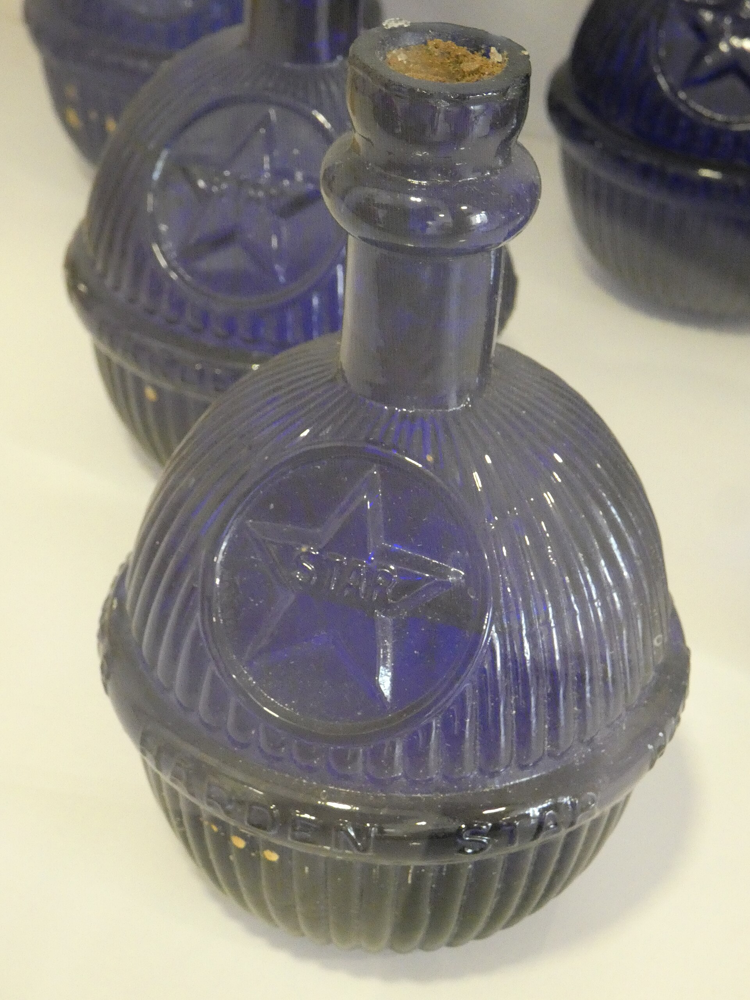
Огня — это средство пожаротушения
Стеклянный сосуд разбивался и выпускал жидкость для тушения.
Зачёт: Огня; Пожара; Пламени; Это огнетушитель
Ведущему: Показывать сосуд целиком; точный химический состав не спрашивать.
Пожарный инструмент Halligan звучит почти как «хулиган». Его назвали в честь поведения спасателей или фамилии человека?
Поведения спасателей / Фамилии человека
Фамилии изобретателя
Инструмент разработал пожарный Хью Халлиган.
Зачёт: Фамилии; Хью Халлигана; Фамилии пожарного
Правда или байка: «В старом Лондоне страховые пожарные команды обязательно оставляли незастрахованный дом гореть». Что отвечает на это музей London Fire Brigade?
Байка: правило было не таким
Музей сообщает о правилах тушить встреченные пожары независимо от страхования: иначе огонь распространялся дальше.
Зачёт: Байка; Миф; Неправда
Ведущему: Не обобщать на все страны и века. Вопрос именно о популярной истории про лондонские страховые команды.
Знакомые сериалы в пересказе нетрезвого управляющего домом. Формулировки авторские.
Два брата ведут семейный бизнес: ездят по стране, ночуют в мотелях и решают вопросы с покойниками, которые плохо поняли условия увольнения. Назовите сериал.
Сверхъестественное
Это авторский шуточный пересказ приключений братьев Винчестеров.
Зачёт: Сверхъестественное; Supernatural
Отчёт по благоустройству: газоны идеальны, фасады ухожены, у каждого соседа есть основание вызывать следственную группу. Адрес — Вистерия-Лейн. Что за сериал?
Отчаянные домохозяйки
Название улицы делает ответ однозначным.
Зачёт: Отчаянные домохозяйки; Desperate Housewives
Девушка выбирает между двумя братьями. Главная проблема анкеты женихов — обоих давно следовало бы снять с учёта живых. Город — Мистик-Фоллс. Назовите сериал.
Дневники вампира
Елена и братья Сальваторе; это шуточное описание, не цитата.
Зачёт: Дневники вампира; The Vampire Diaries
Журналистка регулярно встречается с мужчинами, обсуждает результаты с тремя подругами и превращает личные неудачи в газетный контент. В каком сериале свидания поставлены на самоокупаемость?
Секс в большом городе
Кэрри Брэдшоу пишет колонку о личной жизни и отношениях.
Зачёт: Секс в большом городе; Sex and the City
Ведущему: «Самоокупаемость» — шутка, реальный доход героини считать не надо.
Отец начал рассказывать детям, как познакомился с их матерью. Разговор растянулся на девять сезонов и подозрительно часто уходил в истории про другую женщину. Что за сериал?
Как я встретил вашу маму
Это авторский шуточный пересказ рамочной истории сериала.
Зачёт: Как я встретил вашу маму; How I Met Your Mother; HIMYM
Пять настоящих предметов. Нужно назвать бытовое назначение; грубые версии приветствуются до официального ответа.
Зачем у этой чашки внутри специальная керамическая полочка? Какую часть лица она должна спасать от чая?
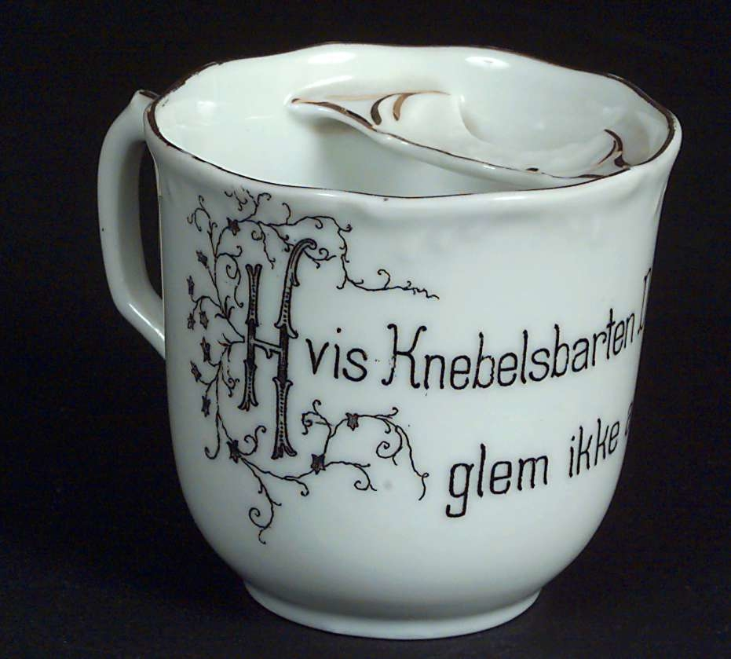
Усы
Полочка защищает усы, пока человек пьёт.
Зачёт: Усы; Чтобы не намочить усы
Грибок нашёлся у бабушки. Его не едят и никуда в тело не вставляют. Какую дырявую вещь на нём удобно чинить?
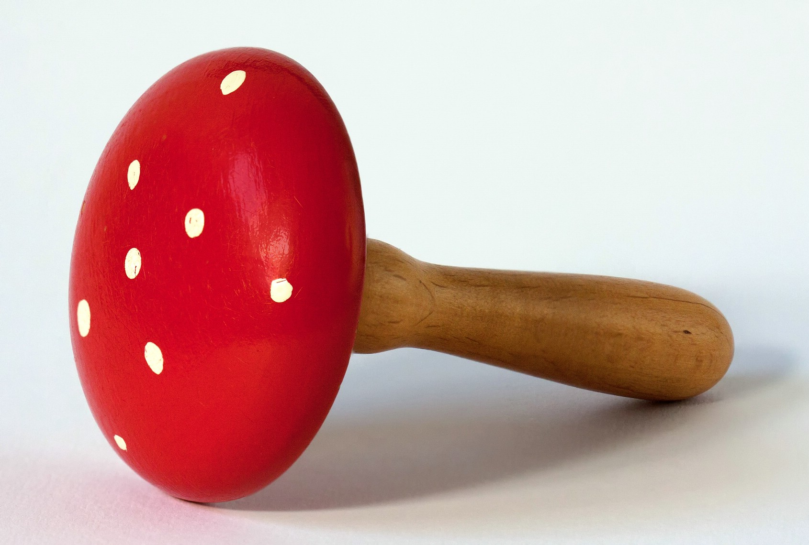
Носок / чулок
Это грибок для штопки: ткань натягивают на шляпку.
Зачёт: Носки; Носок; Чулки; Чулок; Ткань при штопке
Этими щипцами когда-то разделывали продукт, который сегодня спокойно кладут ложкой в чай. Что ими раскалывали?
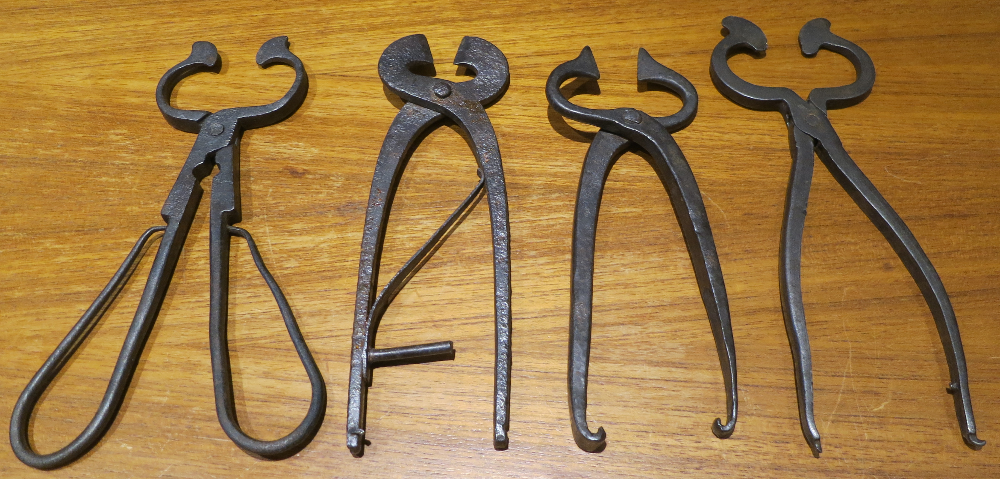
Сахар
Сахар продавали твёрдыми головами, от которых откусывали куски.
Зачёт: Сахар; Сахарную голову; Кусковой сахар
Ведущему: «Щипцы для сахара» засчитывать; это не современные щипцы для перекладывания кубиков.
Эта штука раздвигается, но к гинекологу отношения не имеет. Какой тесный предмет одежды ею растягивали после стирки?
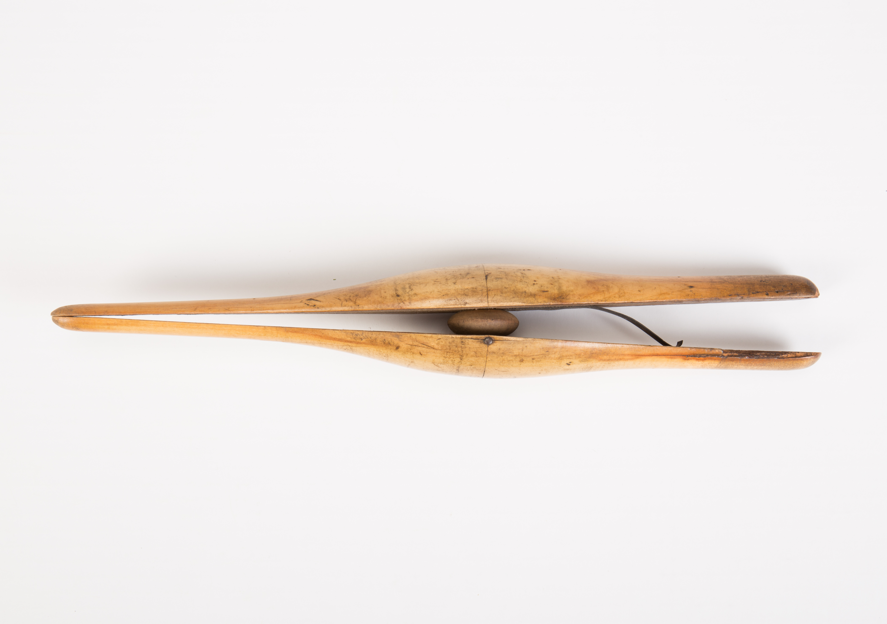
Перчатки
Растяжка возвращала форму пальцам тесных перчаток.
Зачёт: Перчатки; Пальцы перчаток
Серебряные щипцы созданы для подачи конкретного овоща. Для какого: спаржи, редиски или репчатого лука?
Спаржи / Редиски / Репчатого лука
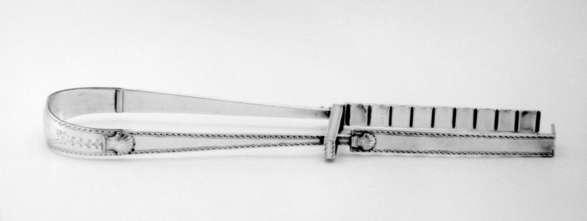
Спаржи
Музейная атрибуция предмета — asparagus tongs.
Зачёт: Спаржи; Спаржа
Назвать гриб или растение по фотографии. Съедобность не является частью ответа.
Назовите гриб. Красный берет явно был куплен не для маскировки.
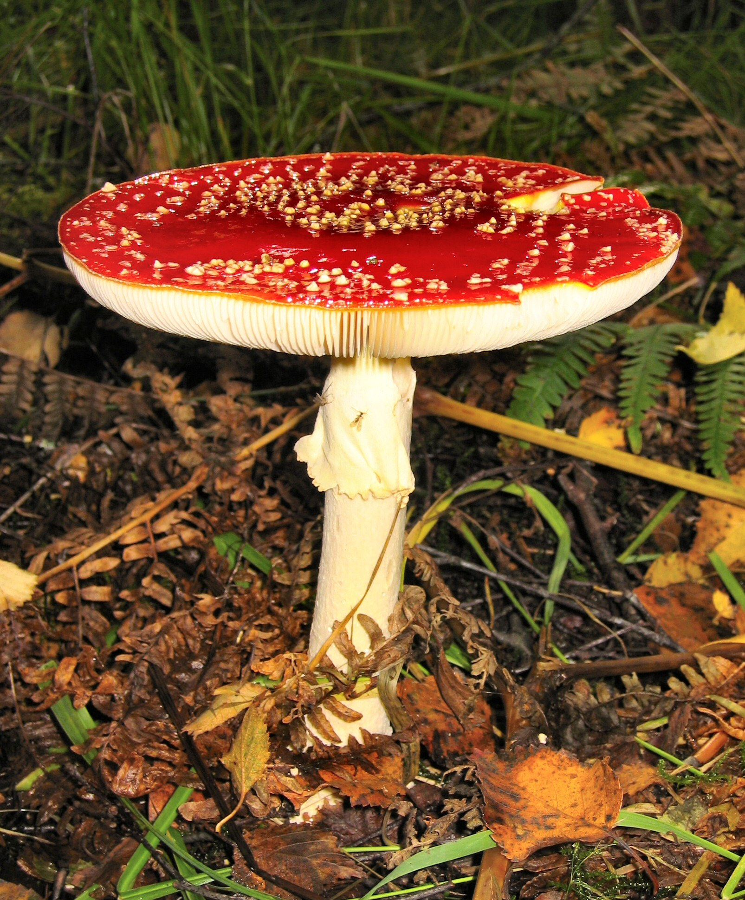
Мухомор красный
Подписанный автором снимок Amanita muscaria.
Зачёт: Мухомор; Красный мухомор; Amanita muscaria
Ведущему: Это распознавание выбранного архивного фото, не инструкция для сбора или еды. Латинское название знать не нужно.
Назовите гриб. В грибном чате за такую находку обычно ставят лайк, а не бан.
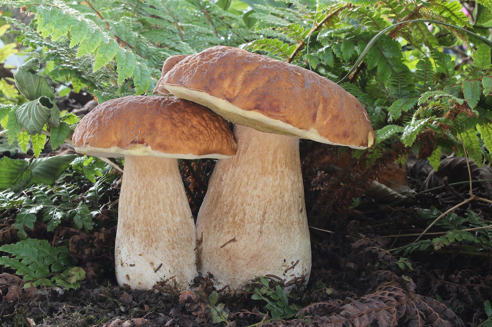
Белый гриб
На фото Boletus edulis, белый гриб.
Зачёт: Белый гриб; Боровик; Boletus edulis
Ведущему: Это распознавание выбранного архивного фото, не инструкция для сбора или еды. Латинское название знать не нужно.
Что за растение устроило этот гигантский белый зонтик?
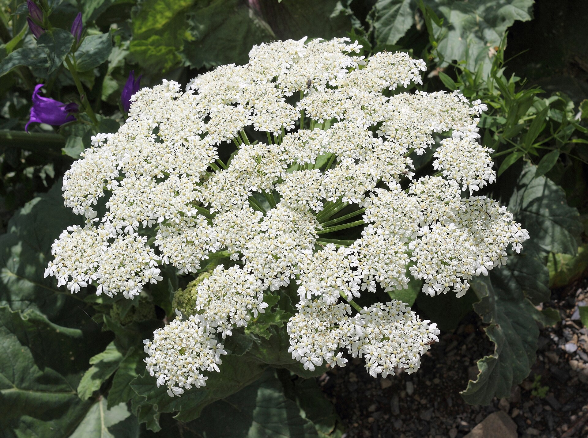
Борщевик
В карточке исходного фото указан борщевик Сосновского. Родового названия достаточно.
Зачёт: Борщевик; Борщевик Сосновского; Heracleum sosnowskyi
Ведущему: Это распознавание выбранного архивного фото, не инструкция для сбора или еды. Латинское название знать не нужно.
Лист похож на веер. Назовите дерево, которое его выпустило.
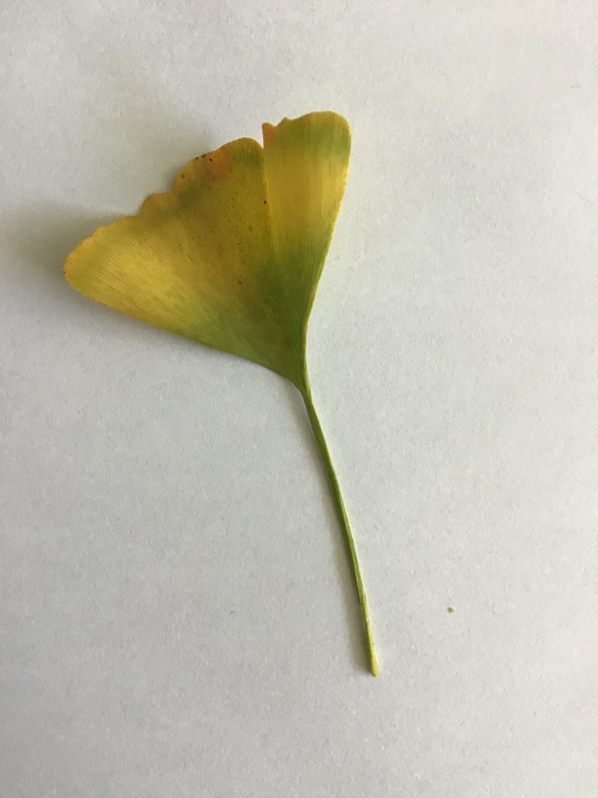
Гинкго
У гинкго характерные веерообразные листья.
Зачёт: Гинкго; Гинкго двулопастный; Ginkgo biloba
Ведущему: Это распознавание выбранного архивного фото, не инструкция для сбора или еды. Латинское название знать не нужно.
Лес решил вырастить на стволе жёлтую монтажную пену. Назовите этот гриб.
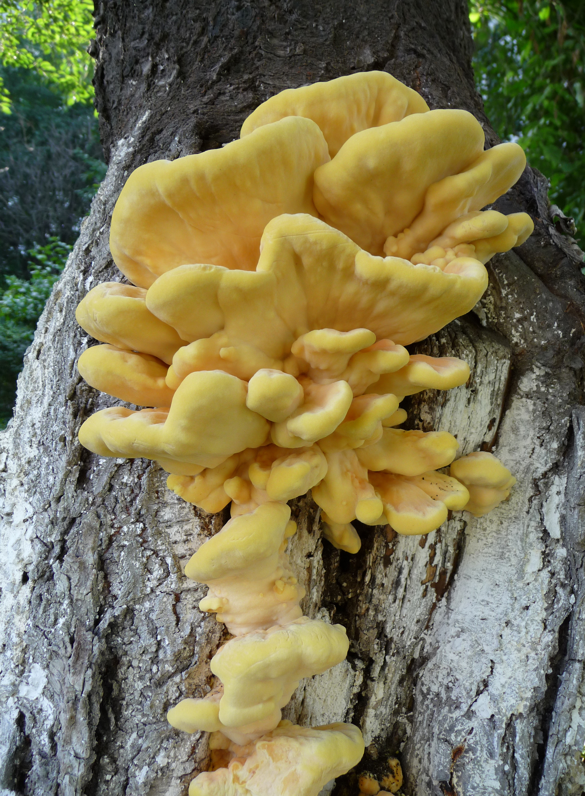
Трутовик серно-жёлтый
Снимок Laetiporus sulphureus. Принимать распространённое разговорное название «куриный гриб».
Зачёт: Трутовик серно-жёлтый; Серно-жёлтый трутовик; Laetiporus sulphureus; Куриный гриб
Ведущему: Это распознавание выбранного архивного фото, не инструкция для сбора или еды. Латинское название знать не нужно.
Реальные виды спорта и состязания, которые похожи на дружеский спор.
Участники прыгают через барьеры, зажав между ног палку с игрушечной лошадиной головой. Как называется это занятие?
Хоббихорсинг
У этого занятия есть федерации и соревнования.
Зачёт: Хоббихорсинг; Hobby horsing
Здесь можно проиграть и от мата, и от удара в челюсть. Какие два вида спорта соединяет шахбокс?
Шахматы и бокс
Раунды шахмат и бокса чередуются.
Зачёт: Шахматы и бокс; Бокс и шахматы
Хоккей без коньков: шайба скользит по дну, игрокам нужно периодически всплывать. Где проходит матч?
Под водой, в бассейне
Подводный хоккей — дисциплина CMAS.
Зачёт: Под водой; В бассейне; На дне бассейна
В английском shin-kicking участники пихают в штанины солому. Что они пытаются защитить: голени, карманы или репутацию?
Голени / Карманы / Репутацию
Голени
Солома служит подкладкой в состязании по ударам по голеням.
Зачёт: Голени; Ноги; Голень
Занятие настолько бытовое, что его придумали делать на горных вершинах и под водой ради экстрима. Какой домашней работой заняты участники extreme ironing?
Гладят бельё
Зафиксированы в том числе групповые подводные сеансы глажки.
Зачёт: Гладят; Гладят бельё; Глажка одежды
Государственная энциклопедия Новой Зеландии: подводная глажка
Отдельная рубрика о публичных видео и проектах Игоря Синяка и Сергея Grey Wiese.
Закончите реплику Игоря Синяка: «Ой, Серёж, ну, честно, …».
Дурка
Короткая публичная реплика стала мемом.
Зачёт: Дурка
Как называется реалити на канале Grey Wiese, в котором Игорю Синяку ищут пару?
Сердце Ангела
Вопрос перенесён сюда из общей сериальной темы.
Зачёт: Сердце Ангела; Сердце ангела
Какой город стал главным фоном европейского видеоблога Серёжи: Париж, Берлин или Лондон?
Париж / Берлин / Лондон
Париж
Парижский контекст блога и выступлений подтверждается интервью и публикациями.
Зачёт: Париж; Paris
У какого артиста Игорь Синяк снялся в клипе «Love Is» вместе с Кристиной Асмус?
Егор Крид
Камео в клипе 2019 года указано среди участников видео.
Зачёт: Егор Крид; Крид
Какая Наталья выступает в роли психолога в лоре «Сердца Ангела»? Назовите фамилию.
Холоденко
Участие Натальи Холоденко отражено в описаниях и разборах проекта.
Зачёт: Холоденко; Наталья Холоденко
Ведущему: Ответ — только фамилия. Не обсуждаем профессиональные качества и не требуем имён участников свиданий.
Специально очень простые задания на зрение. На ответ 5–7 секунд. Руки здесь нарисованы, это не фотографии травм.
Каким цветом написано слово? Не читайте его — назовите цвет букв.
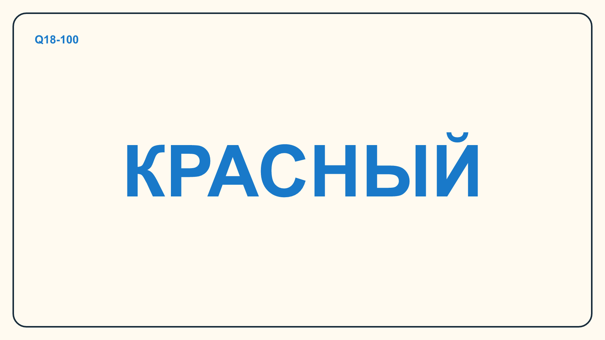
Синим
Слово «КРАСНЫЙ» нарисовано синим.
Зачёт: Синим; Синий; Голубым
Авторская задача, составленная для этой викторины
Какого пальца нет на схеме руки?
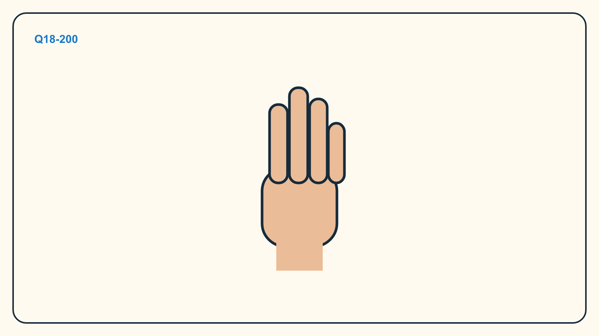
Большого
Слева от указательного отсутствует большой палец.
Зачёт: Большого; Большой палец
Авторская задача, составленная для этой викторины
Сколько синих кружков?
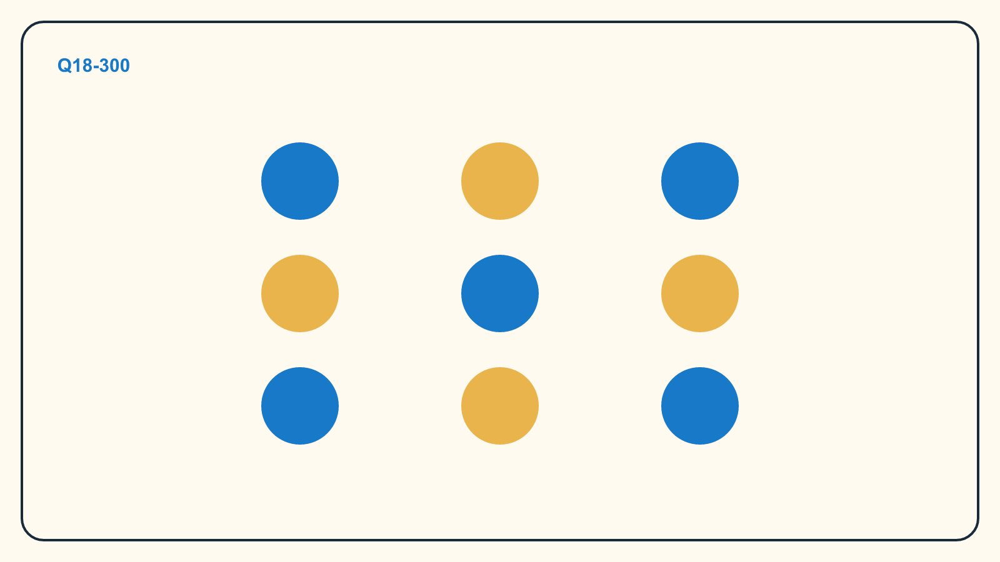
Пять
Синие кружки стоят в четырёх углах и в центре.
Зачёт: Пять; 5
Авторская задача, составленная для этой викторины
Куда показывает сама стрелка? Надпись не слушаем.
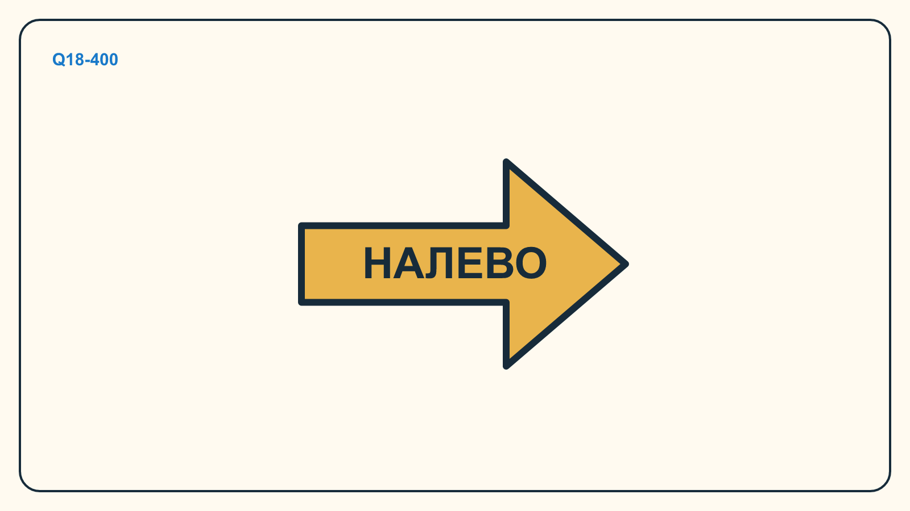
Вправо
Стрелка указывает вправо, хотя на ней написано «НАЛЕВО».
Зачёт: Вправо; Направо
Авторская задача, составленная для этой викторины
Какого пальца нет на этой схеме руки?
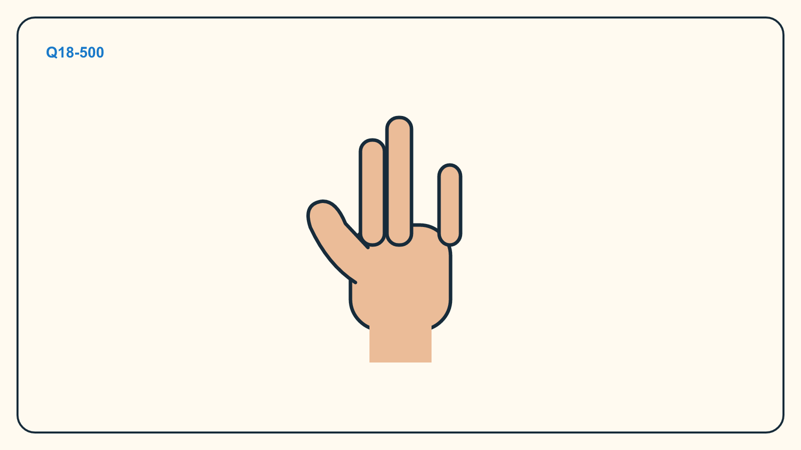
Безымянного
Между средним и мизинцем оставлено место безымянного.
Зачёт: Безымянного; Безымянный палец
Авторская задача, составленная для этой викторины
Ребусы на русские слова. Числа читаем словами, зачёркнутую букву убираем, замену применяем к соседнему слову.
Прочитайте ребус. Нужно одно русское слово.
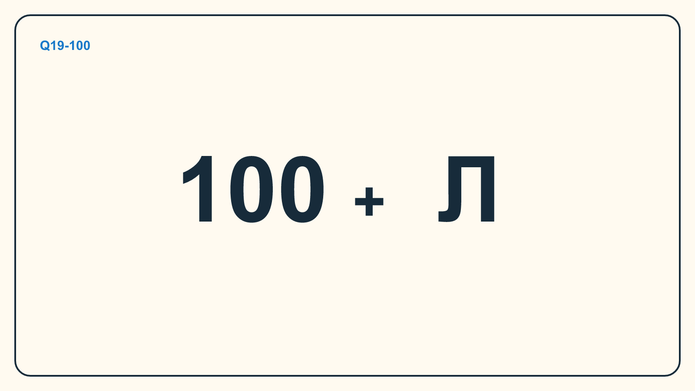
Стол
СТО + Л = СТОЛ.
Зачёт: Стол
Ведущему: Картинка создана для этого пакета. Reddit использован для исследования фонетических и пространственных механик, а не как источник готового русского задания.
Авторская задача, составленная для этой викторины
Прочитайте две картинки как части одного слова.
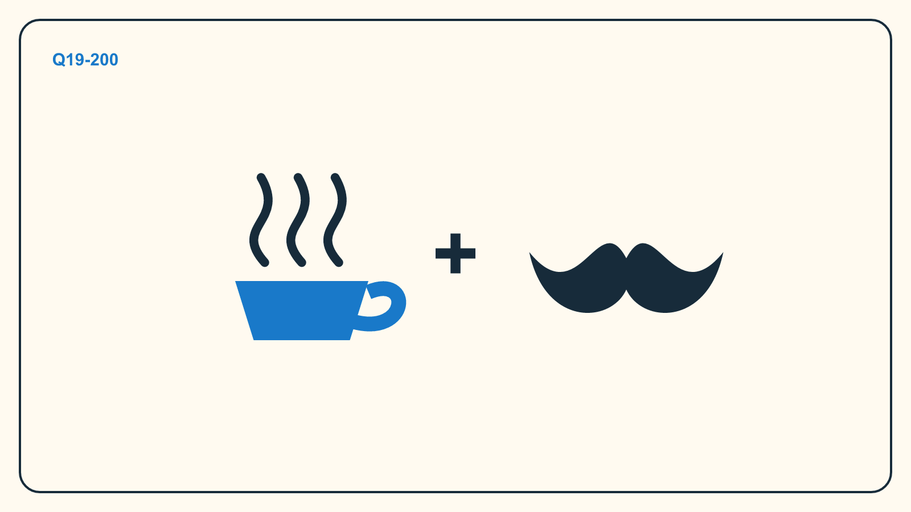
Парус
ПАР + УС = ПАРУС. На первой картинке нужен пар над чашкой.
Зачёт: Парус
Ведущему: Картинка создана для этого пакета. Reddit использован для исследования фонетических и пространственных механик, а не как источник готового русского задания.
Авторская задача, составленная для этой викторины
Здесь важно, где стоят буквы. Какое слово получилось?
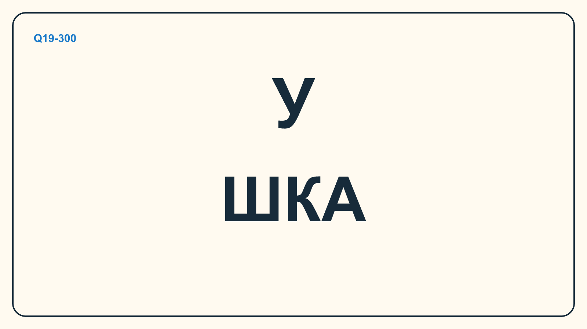
Подушка
ШКА находится ПОД буквой У: ПОД + У + ШКА.
Зачёт: Подушка
Ведущему: Картинка создана для этого пакета. Reddit использован для исследования фонетических и пространственных механик, а не как источник готового русского задания.
Авторская задача, составленная для этой викторины
Сложите названия картинок. Первую назовите словом из трёх букв, вторую — из четырёх. Зачёркнутую букву уберите.
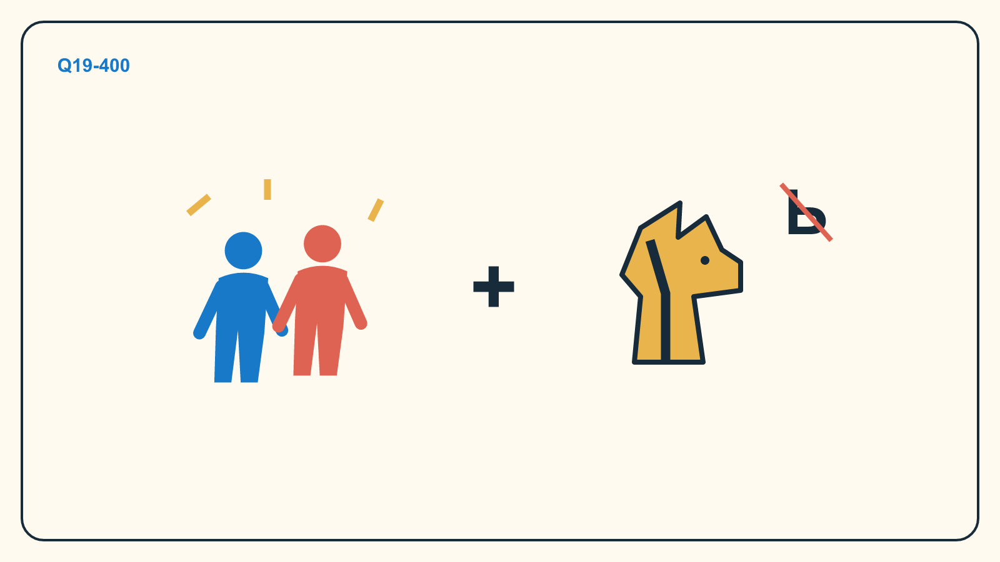
Балкон
БАЛ + КОНЬ без Ь = БАЛКОН.
Зачёт: Балкон
Ведущему: Картинка создана для этого пакета. Reddit использован для исследования фонетических и пространственных механик, а не как источник готового русского задания.
Авторская задача, составленная для этой викторины
Сложите названия, но сначала выполните замену буквы.
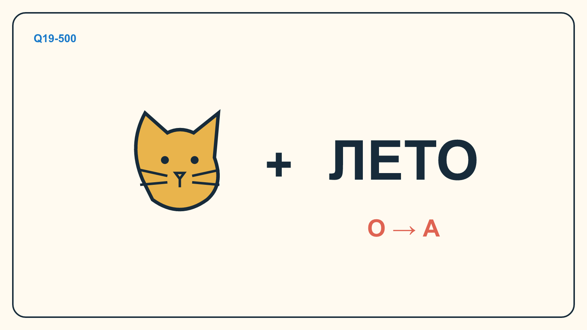
Котлета
КОТ + ЛЕТО, где О заменено на А: КОТ + ЛЕТА.
Зачёт: Котлета
Ведущему: Картинка создана для этого пакета. Reddit использован для исследования фонетических и пространственных механик, а не как источник готового русского задания.
Авторская задача, составленная для этой викторины
Самбо, дзюдо и названия, похожие на заказ в ресторане.
САМБО — это не имя тренера и не японская деревня. Расшифруйте сокращение.
Самозащита без оружия
Так название объясняет Международная федерация самбо.
Зачёт: Самозащита без оружия
На турнире дзюдо один спортсмен в белом, другой в синем. Это не уровни редкости персонажей. Зачем нужны разные цвета?
Чтобы различать соперников
Цвет помогает идентифицировать участников; он не обозначает мастерство.
Зачёт: Чтобы судья и зрители различали спортсменов; Чтобы различать соперников
Ведущему: Засчитать любой ответ про удобство различения спортсменов.
Рефери сказал дзюдоисту «шидо». Это не комплимент его броску. Что он только что получил?
Замечание / штрафное наказание
Шидо — наказание за нарушение правил.
Зачёт: Штраф; Замечание; Предупреждение; Наказание
Ведущему: Не спрашивать число замечаний до дисквалификации: это другой вопрос.
Хадака-дзимэ называют «голым удушением». Что здесь не используют: одежду соперника, руки или здравый смысл?
Одежду соперника / Руки / Здравый смысл
Одежду соперника
Техническое описание IJF прямо указывает на отсутствие захвата дзюдоги.
Зачёт: Одежду; Куртку; Захват дзюдоги; Отвороты
Ведущему: Только словесный ответ, показывать приём не нужно.
«Кани-басами»: суши, покемон или бросок в дзюдо? Назовите правильную категорию.
Суши / Покемон / Бросок в дзюдо
Бросок в дзюдо
Приём есть в классификации Кодокана, но запрещён в соревновательных правилах IJF.
Зачёт: Бросок; Приём дзюдо; Дзюдо
Ведущему: Знание перевода и техники исполнения не требуется.
Реальные исследования из архива Шнобелевской премии. Серьёзный вид ведущего обязателен.
Физик исследовал, может ли это домашнее животное быть одновременно твёрдым телом и жидкостью. Кого он изучал?
Кота
Шнобелевская премия по физике 2017 года: работа о реологии кошек.
Зачёт: Кота; Кошку; Кошек
Кого Б. Ф. Скиннер пытался привлечь к наведению ракет: голубей, хомяков или очень мотивированных пчёл?
Голубей / Хомяков / Очень мотивированных пчёл
Голубей
Исследование отмечено Шнобелевской премией мира 2024 года.
Зачёт: Голубей; Голубь
Физическая работа о форели показала движение рыбы в вихревом потоке. Что особенно удивляло в участнице опыта?
Она была мёртвой
Поток способен пассивно двигать тело; премия по физике 2024 года.
Зачёт: Была мёртвой; Рыба мертва; Неживая
Ведущему: Не говорить, что рыба ожила или сознательно плыла.
Учёный получил премию за объяснение того, почему геологи любят лизать свои рабочие материалы. Что они облизывают?
Камни
Ян Заласевич, Шнобелевская премия по химии и геологии 2023 года.
Зачёт: Камни; Горные породы; Минералы
Норвежские исследователи наряжались белыми медведями и наблюдали реакцию кого: северных оленей, пингвинов или коллег по университету?
Северных оленей / Пингвинов / Коллег по университету
Северных оленей
Исследование реакции оленей отмечено Шнобелевской премией 2014 года.
Зачёт: Оленей; Северных оленей
Зарубежные традиции, которые выглядят как последствия очень странного спора.
В испанском Буньоле люди массово забрасывают друг друга этим овощем. Какое оружие выдаёт праздник Томатина?
Помидоры
Это настоящая массовая томатная битва.
Зачёт: Помидоры; Томаты
На английском Куперс-Хилл люди бегут и падают с крутого склона вслед за продуктом. Ради чего весь этот травмоопасный движ?
Головки сыра
Cheese Rolling: вниз пускают головку Double Gloucester.
Зачёт: Сыра; Сырной головы; Головки сыра
Ведущему: Марку сыра требовать не нужно.
На Эль-Колачо в Испании человек в костюме дьявола перепрыгивает через очень необычное препятствие на матрасах. Через кого?
Младенцев
Это документированная местная традиция в Кастрильо-де-Мурсия.
Зачёт: Младенцев; Малышей; Маленьких детей
В испанском Аро белую одежду надевают, чтобы вскоре она стала фиолетовой. Чем друг друга обливают на местной «битве»?
Вином
Винная битва — реальный праздник в Риохе.
Зачёт: Вином; Красным вином
Финский чемпионат по переноске жён. Своей жены нет, зато есть согласная подруга соседа. Откажут из-за отсутствия брака или разрешат старт?
Разрешат: быть супругами не обязательно
Правила допускают переноску другого человека, не только собственной супруги.
Зачёт: Разрешат; Можно не свою жену; Брак не обязателен
Ведущему: В условии считать возраст, вес и прочие требования выполненными. Вопрос только о браке, это нужно сказать при споре.
В полном снимке часть закрыта плашкой. Нужно угадать скрытое; затем ведущий убирает плашку.
У этого мужчины необычный мотоцикл. Что вместо привычных двух колёс скрыто под плашкой?
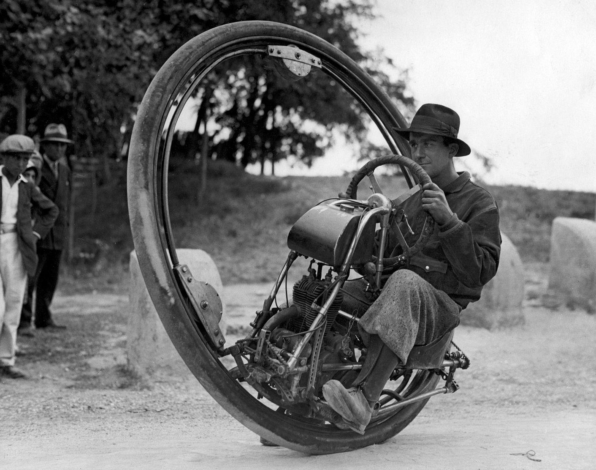
? ? ?Одно огромное колесо вокруг водителя
Архивный снимок одноколёсного мотоцикла Goventosa.
Зачёт: Одно колесо; Моноколесо; Моноколёсный мотоцикл
Ведущему: Ответ должен упоминать одно колесо; назвать изобретателя не нужно.
Кого запрягли в эту повозку вместо лошадей?
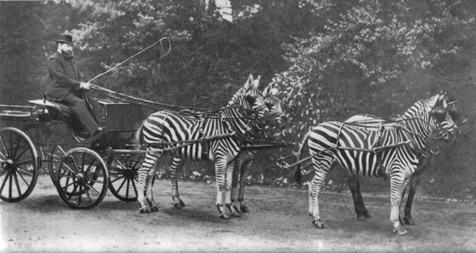
?Зебр
Уолтер Ротшильд действительно ездил в повозке, запряжённой зебрами.
Зачёт: Зебр; Зебры
Ведущему: Закрыть животных целиком, включая полосатые ноги.
Портрет выглядит прилично, но реквизит в нижней части странноват. Голова какого животного скрыта плашкой?
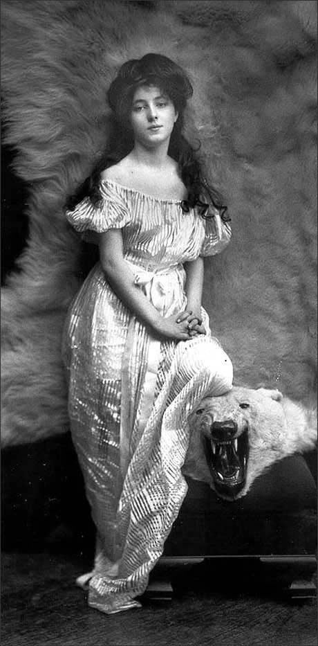
?Медведя
В студийном портрете Эвелин Несбит видна голова медведя на шкуре.
Зачёт: Медведя; Белого медведя; Медвежья голова
Ведущему: Достаточно «медведь». Не требовать вид животного и не утверждать, что медведь живой.
Дали в воздухе, вода тоже. Какие животные летят в скрытой части кадра?
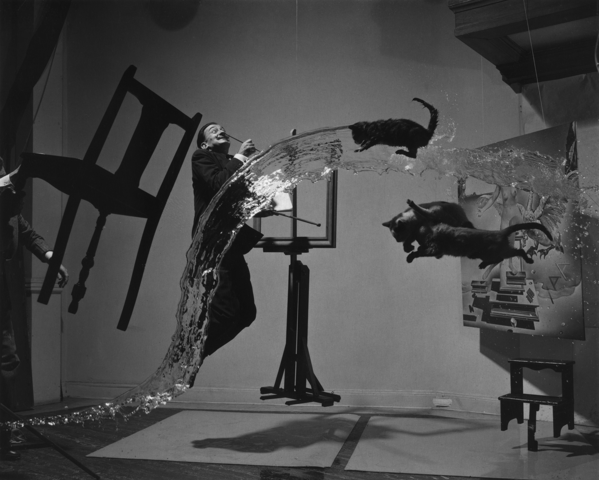
?Кошки
На снимке Филиппа Халсмана Dalí Atomicus летят три кошки.
Зачёт: Кошки; Коты; Котята
Ведущему: Название работы и количество животных не нужны. Художник виден, но узнавать его для ответа не обязательно.
Какое громоздкое приспособление подвесили над кроватью, чтобы человек мог заниматься своим хобби лёжа?
Клавиатуру фортепиано
Британское фортепиано для прикованных к постели людей, архивный снимок 1935 года.
Зачёт: Фортепиано; Пианино; Клавиатуру пианино; Пианино для лежачих
Ведущему: Засчитать «пианино», «фортепиано» и «клавиши музыкального инструмента». Верхняя музейная подпись тоже должна быть закрыта.
Piano voor aan bed gebonden zieken - Piano for the bedridden (4192748677).jpg
Испанские, немецкие и итальянские слова, которые опасно понимать по созвучию.
На английской упаковке написано NO PRESERVATIVES. Презервативов там, надеемся, и так нет. Чего на самом деле нет по этой надписи?
Консервантов
Preservatives — вещества, замедляющие порчу продукта.
Зачёт: Консервантов; Пищевых консервантов
Испанка говорит «estoy embarazada». Это не английское embarrassed. Она смущена, беременна или потеряла багаж?
Смущена / Беременна / Потеряла багаж
Беременна
Испанское embarazada означает «беременная».
Зачёт: Беременна; Беременная
Немецкое слово GIFT выглядит как английский «подарок». Но если на бутылке именно немецкая надпись, что за неприятный сюрприз там обозначен?
Яд
Немецкое das Gift — яд.
Зачёт: Яд; Отрава; Токсин
Испанец сказал, что он constipado. Не спешите искать слабительное: о каком обычном недомогании он говорит?
Простуда
В испанском constipado — простуда; английское constipation ведёт к другой ассоциации.
Зачёт: Простуда; Простужен; Насморк
Ведущему: Засчитать «простужен» и «насморк», не требовать медицинского диагноза.
В Испании burro — осёл. В Италии burro можно попросить к хлебу без ветеринарных последствий. Что подадут?
Сливочное масло
Итальянское burro — сливочное масло.
Зачёт: Сливочное масло; Масло
Ведущему: Растительное масло не засчитывать.
Назвать животное или птицу по фотографии.
Кто это? На вид — самый спокойный участник вашей вечеринки.
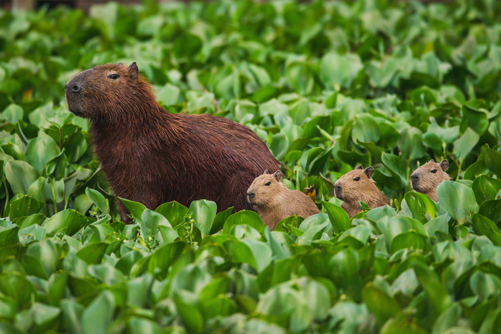
Капибара
Капибара, Hydrochoerus hydrochaeris.
Зачёт: Капибара; Водосвинка
Ведущему: Отвечаем названием животного, не описанием внешности. Подвиды не нужны.
Что за птица вышла с панк-причёской?
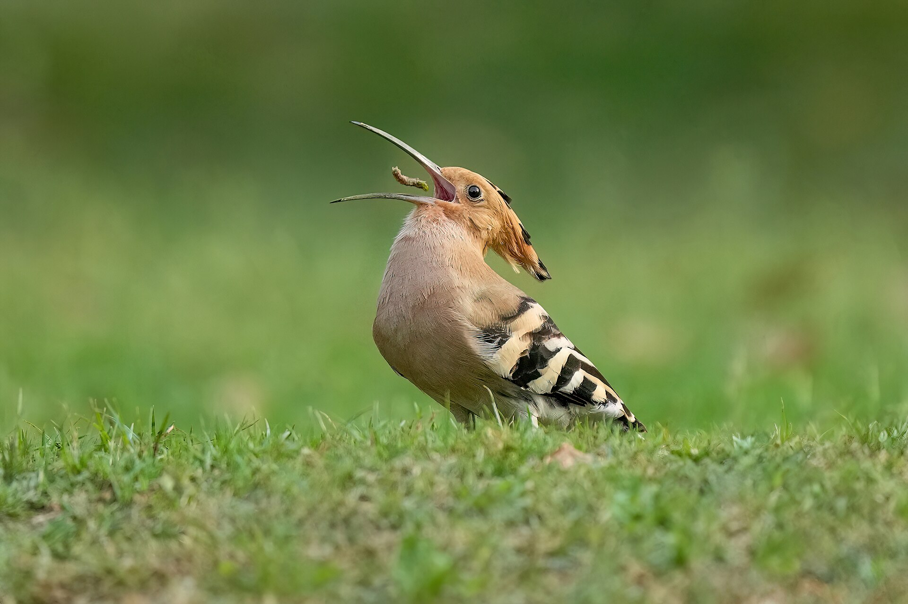
Удод
Удод, Upupa epops.
Зачёт: Удод; Upupa epops
Ведущему: Отвечаем названием животного, не описанием внешности. Подвиды не нужны.
008 Eurasian hoopoe eating in Keoladeo National Park Photo by Giles Laurent.jpg
Назовите эту небольшую птицу. Здесь без шуточной подсказки — просто узнаём лесного соседа.
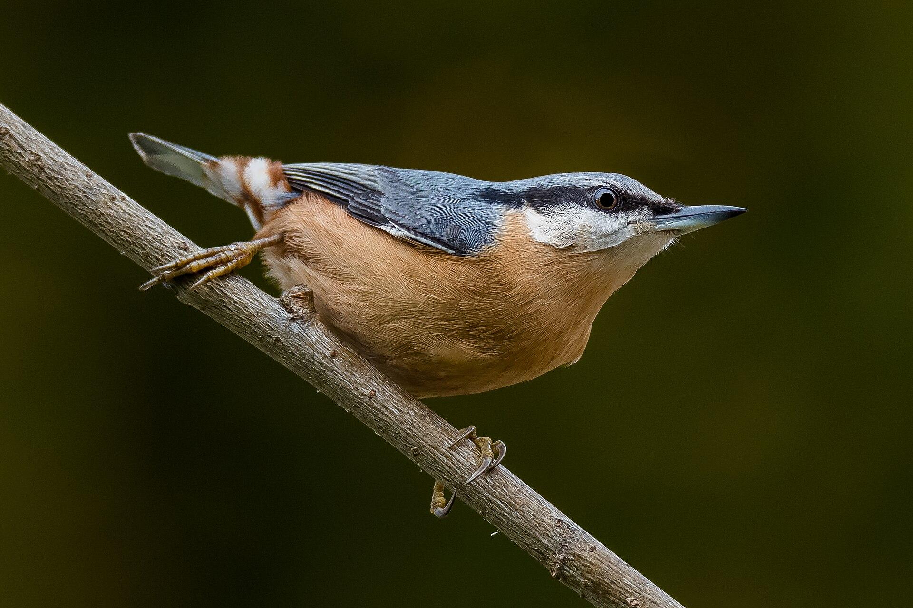
Поползень
Обыкновенный поползень.
Зачёт: Поползень; Обыкновенный поползень; Sitta europaea
Ведущему: Отвечаем названием животного, не описанием внешности. Подвиды не нужны.
Кто это? Нос будто проектировали отдельно от остального животного.
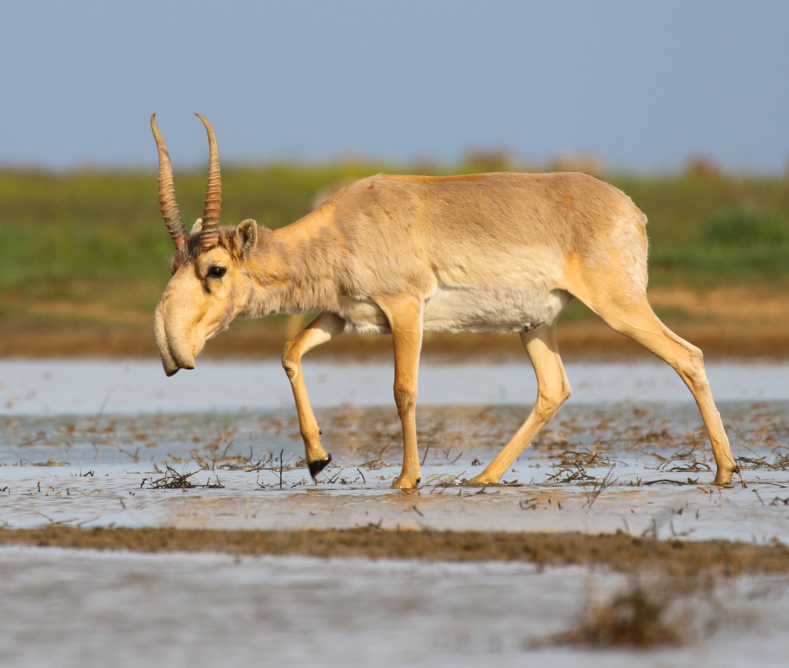
Сайгак
Сайгак с характерным увеличенным носом.
Зачёт: Сайгак; Сайга; Saiga tatarica
Ведущему: Отвечаем названием животного, не описанием внешности. Подвиды не нужны.
Как называется птица, у которой на лице будто припаркован деревянный башмак?
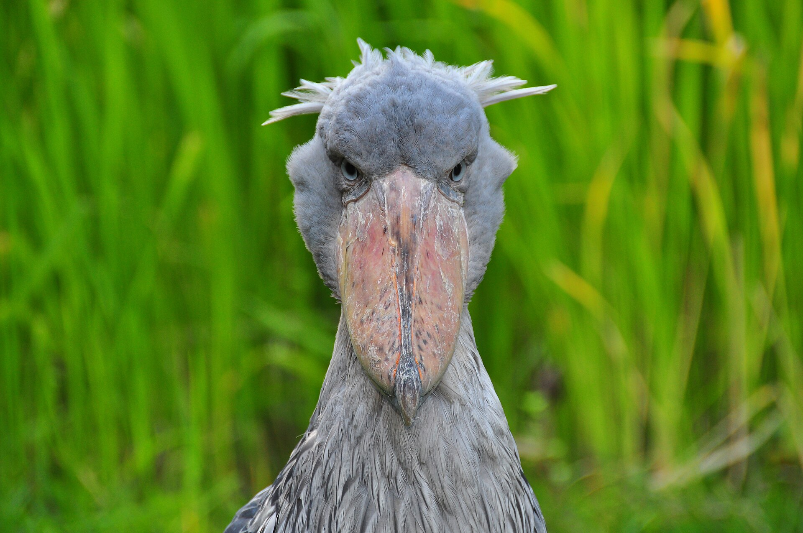
Китоглав
Китоглав, он же shoebill.
Зачёт: Китоглав; Королевская цапля; Balaeniceps rex
Ведущему: Отвечаем названием животного, не описанием внешности. Подвиды не нужны.
Balaeniceps rex (Schuhschnabel - Shoebill) - Weltvogelpark Walsrode 2010-10.jpg
Узнать известный фильм по короткому авторскому пересказу. Эти вопросы должны проходить быстро.
Курортный роман на дорогом корабле закончился незапланированным знакомством с айсбергом. Назовите фильм.
Титаник
Авторский пересказ; название корабля не произносится.
Зачёт: Титаник; Titanic
Хозяин болота хочет, чтобы сказочные соседи съехали. Ради тишины соглашается выполнить квест местного коротышки. Назовите мультфильм.
Машина приехала из будущего, чтобы сорвать женщине планы на материнство. В ответ ей отправили мужчину, который эти планы как раз обеспечил. Назовите фильм.
Терминатор
Пересказ фильма 1984 года.
Зачёт: Терминатор; The Terminator
Мужчины нашли способ перестать обсуждать чувства: бьют друг друга, варят мыло и очень просят не рассказывать о кружке по интересам. Назовите фильм.
Бойцовский клуб
Прямой ответ не требует раскрывать финальный сюжетный поворот.
Зачёт: Бойцовский клуб; Fight Club
После мальчишника друзьям требуется инвентаризация: жениха нет, зато есть младенец и тигр. Что за фильм?
Мальчишник в Вегасе
Речь о первом фильме серии.
Зачёт: Мальчишник в Вегасе; The Hangover
В утверждении испорчена одна деталь. Нужно исправить её, а не просто сказать «неправда».
«У осьминога одно сердце, зато рук восемь». Исправьте число сердец.
Три
Одно сердце обслуживает тело, два — жабры.
Зачёт: Три; 3
«Бабочка проверяет, подходит ли лист для кладки яиц, клювом». Какой частью тела нужно заменить выдуманный клюв?
Лапками
На лапках есть вкусовые рецепторы.
Зачёт: Лапками; Лапами; Ножками; Ногами
Washington State University: вкусовые рецепторы на лапках бабочек
«В жару металлическая конструкция Эйфелевой башни сжимается». Замените последнее слово, чтобы стало верно.
Расширяется
Металл испытывает тепловое расширение. Размеры в сантиметрах не спрашиваем.
Зачёт: Расширяется; Нагревается и расширяется
«Бананы растут на дереве». Как ботанически назвать само растение вместо дерева?
Травянистое растение
Банан — крупное травянистое растение.
Зачёт: Трава; Гигантская трава; Травянистое растение
«У вомбата помёт в форме шариков». Какая геометрическая форма исправит утверждение?
Кубики
Кубическую форму изучали исследователи Университета Тасмании.
Зачёт: Кубики; Кубы; Кубическая форма
Знакомимся с необычной едой других стран. Готовить и пробовать для ответа не нужно.
Чёрная паста не обязательно сгорела. Какое вещество морского животного традиционно используют для такого цвета?
Чернила каракатицы
Нужна идея чернил головоногих; конкретный вид не принципиален.
Зачёт: Чернила каракатицы; Чернила кальмара; Чернила
Мексиканский уитлакоче кладут в тако, хотя на кукурузе он выглядит как заболевание. Что это: гриб, водоросль или насекомое?
Гриб / Водоросль / Насекомое
Гриб
Уитлакоче — гриб Ustilago maydis, связанный с кукурузой.
Зачёт: Гриб; Паразитический гриб
Исландский хаукарль славится запахом и выдержкой. Из какого морского хищника его делают?
Акулы
Музей Bjarnarhöfn описывает его как ферментированную акулу.
Зачёт: Акулы; Акула; Гренландская акула
Японское сирако выглядит как нежный белый деликатес. Это рыбная печень, молоки или рисовая пена?
Рыбная печень / Молоки / Рисовая пена
Молоки
JNTO описывает сирако как milt — семенные железы рыб.
Зачёт: Молоки; Семенные железы рыб; Рыбные молоки
Филиппинский балют — яйцо, внутри которого уже начался очень конкретный сюжет. Что отличает его от обычного варёного яйца?
Развивающийся эмбрион птицы
В источнике речь об оплодотворённом утином яйце с развивающимся эмбрионом.
Зачёт: Эмбрион; Зародыш утёнка; Развивающийся птенец; Утиный эмбрион
Название фильма зашифровано картинками. Нужен привычный русский прокатный вариант.
Какой фильм зашифрован?
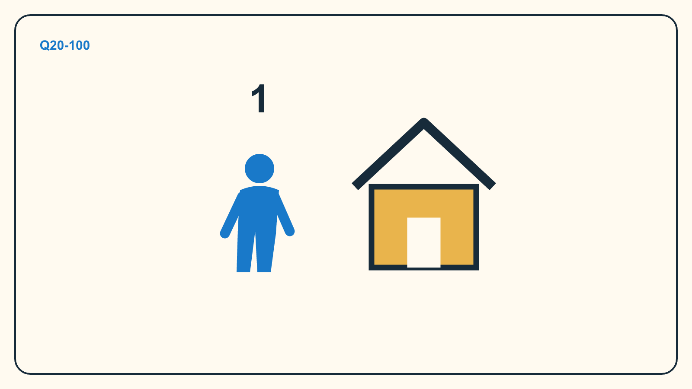
Один дома
Один человек + дом.
Зачёт: Один дома; Home Alone
Ведущему: Авторская иллюстрация. Угадываем название, а не конкретную часть франшизы.
Авторская задача, составленная для этой викторины
Какой фильм зашифрован?
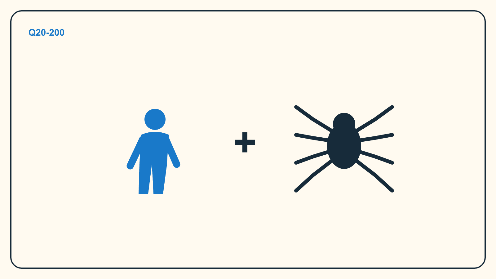
Человек-паук
Человек + паук.
Зачёт: Человек-паук; Спайдермен; Spider-Man
Ведущему: Авторская иллюстрация. Угадываем название, а не конкретную часть франшизы.
Авторская задача, составленная для этой викторины
Какой фильм зашифрован?
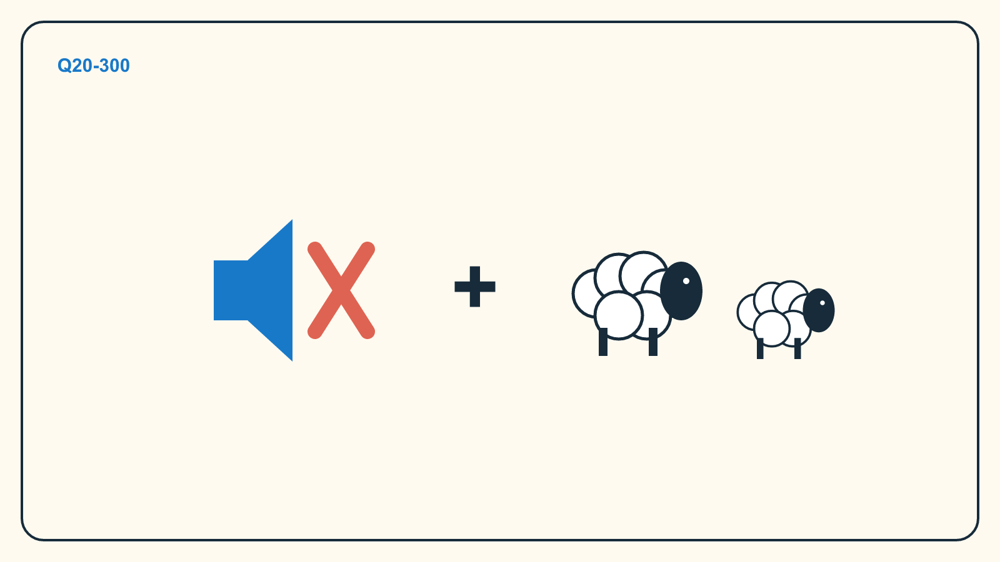
Молчание ягнят
Отключённый звук + ягнята.
Зачёт: Молчание ягнят; The Silence of the Lambs
Ведущему: Авторская иллюстрация. Угадываем название, а не конкретную часть франшизы.
Авторская задача, составленная для этой викторины
Какой фильм зашифрован?
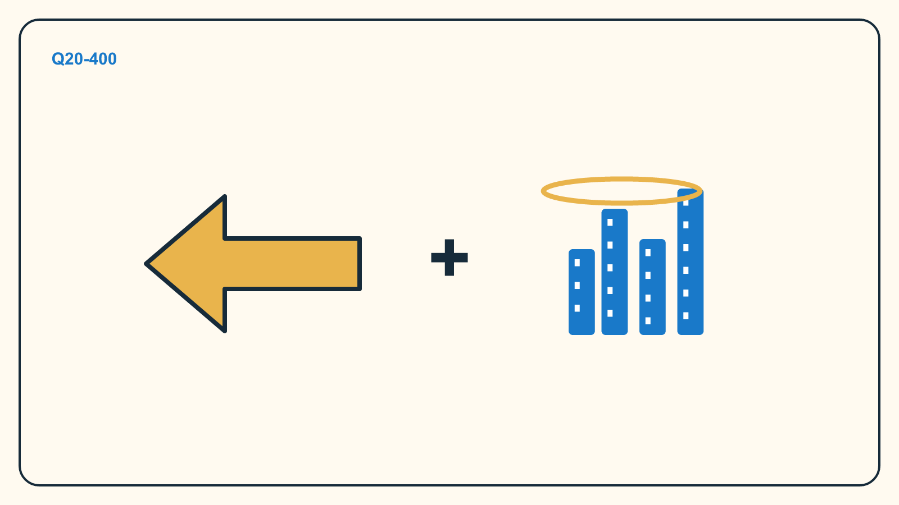
Назад в будущее
Стрелка назад + футуристический город.
Зачёт: Назад в будущее; Back to the Future
Ведущему: Авторская иллюстрация. Угадываем название, а не конкретную часть франшизы.
Авторская задача, составленная для этой викторины
Какой фильм зашифрован?
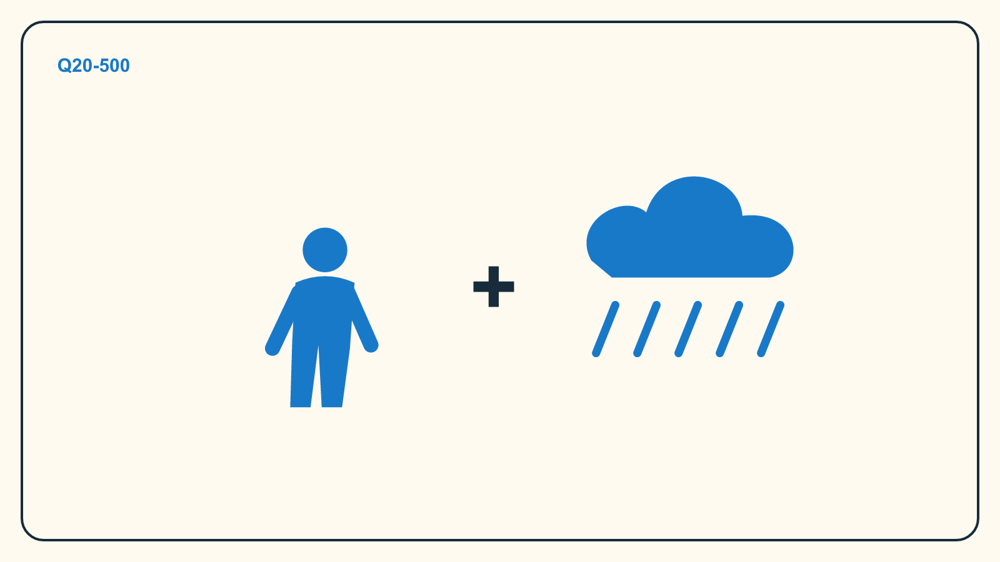
Человек дождя
Человек + дождь.
Зачёт: Человек дождя; Rain Man
Ведущему: Авторская иллюстрация. Угадываем название, а не конкретную часть франшизы.
Авторская задача, составленная для этой викторины